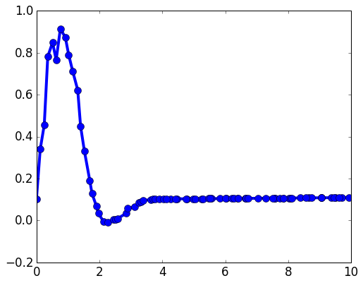

Análisis de datos¶
En el archivo espectros.tar.gz hay una estructura de directorios y
archivos de mediciones, correspondiente a datos que se toman en un
experimento. Cada espectro corresponde a mediciones que se toman en
forma consecutiva a intervalos regulares por lo que, para cada día, el
número n del espectro está relacionado con el tiempo de la medición
en la evolución del experimento. Los espectros tienen la forma:

Se cree que cada una de las curvas experimentales puede modelarse mediante la función
$$ f_{n}(x) = A_{n} e^{-(x-a n)^{2}/2 \sigma_{n}} \sin{(\omega_{n} x + \phi_{n})} $$ donde \(a\) es la misma constante para todos los espectros y \(n\) es el número de espectro, que se supone proporcional al tiempo.
Se pide que haga un programa que permita leer y analizar los datos. El programa debe:
- Leer los datos para cada espectro, recorriendo la estructura de subdirectorios.
- Utilizar los datos correspondientes a grandes valores del eje x para determinar la línea de base y restarla de los espectros (la línea de base puede tener una componente no-constante).
- Obtener numéricamente los valores de \(\sigma_{n}\) y \(\omega_{n}\), y graficarlas en dos paneles del mismo gráfico, como función de \(n\) (correspondiente a un tiempo \(t\)).
- Ajustar ambas curvas con polinomios y presentar los parámetros en el gráfico correspondiente.
NOTA: No trabaje con el archivo comprimido; descargue y descomprima el archivo, creando un árbol de directorios y archivos.
Extras:¶
Agregar un tercer panel, donde se graficará el espectro corregido (con la línea de base restada) correspondiente a un tiempo determinado. Este panel se actualizará cuando uno seleccione con el mouse en el gráfico de \(\omega_{n}\).